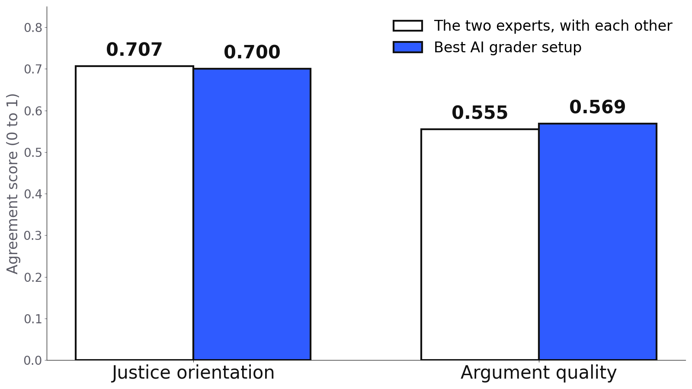

State, Not Trait
Do people hold steady values, or does it depend on how and when you ask? An analysis of players in a democracy simulation game.
- My role
- All of the analysis: the AI grader and its validation, the statistics, and the conclusions. The data was collected by the research team.
- Team
- Research team, Technion and Bar-Ilan University
- When
- 2026
- Tools
- Python, pandas, statsmodels, scikit-learn, an LLM API
The problem
In a democracy simulation game, 42 participants faced dilemmas in two fictional worlds, 1950 and 2050. Each dilemma was asked three ways: a quick multiple-choice click, a written explanation, and a response under pressure. The research question: is someone's sense of justice a stable trait, or a state that shifts with the situation?
There was a practical problem too. 480 written answers had to be scored on two scales, and coding them all by hand was not realistic.
What I did
Built an AI grader and checked it against experts
Two human experts scored a 10% sample. I measured how much they agreed with each other, and set that as the bar the AI had to reach.
Compared a few setups
I tried several instruction styles and models against the expert-scored answers and report the best one on each scale. The expert answers were never used to write the instructions themselves.
Looked at consistency from every angle
Within a person across decisions, across the two worlds, between the click and the written answer, between what people said in a survey and what they did in the game, and whether people fall into clear types at all.
What I found
On the second scale, argument quality, the best setup reached 0.569 against the experts' 0.555. On each scale, the best AI setup agreed with the experts about as well as they agreed with each other.

White: how much the two experts agreed with each other. Blue: the best AI setup's agreement with them.
The behavior side was just as clear. A person's choices in 1950 barely predicted their choices in 2050, what people said in the survey had almost no relation to what they did, and the pressure round pushed people toward outcome-focused answers. Justice orientation shifted with the situation instead of staying fixed.

Every participant, every decision. If values were a fixed trait, each row would be a single color.
What I'd do next
42 people is a small group, and two expert raters is the minimum for this kind of check. A third rater and a larger sample would turn these findings from a strong signal into something I'd be comfortable calling a result.